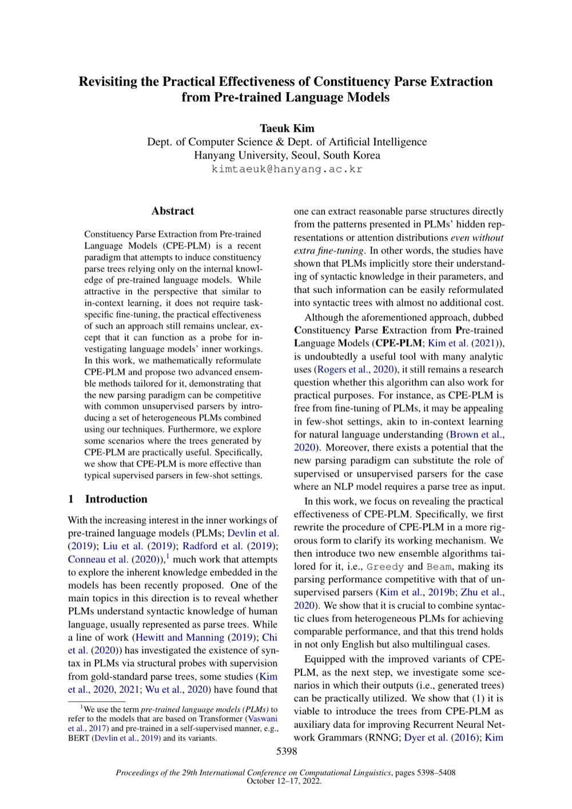

Revisiting the Practical Effectiveness of Constituency Parse Extraction from Pre-trained Language Models
COLING 2022
Taeuk Kim
One-Line Summary
A study revisiting the practical effectiveness of constituency parse extraction

Figure 1. Revisiting the practical effectiveness of constituency parse extraction from pre-trained language models, with systematic evaluation across multiple settings.
Key Points
Reassesses the practical utility of constituency structure extraction methods from multiple perspectives
Analyzes the practical limitations of existing approaches and suggests directions for improvement